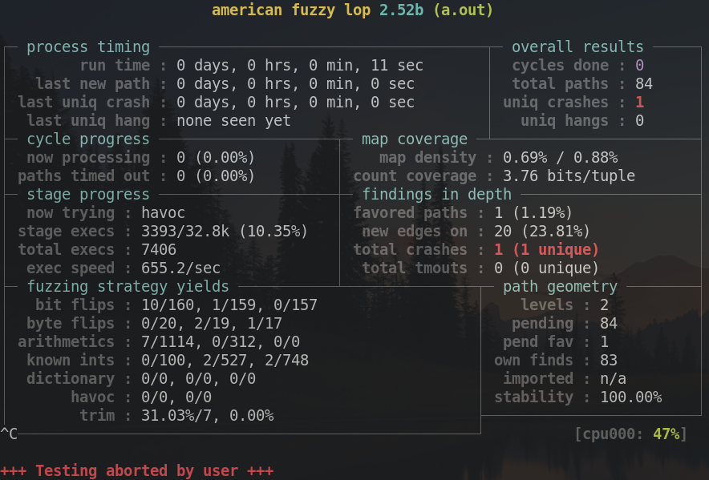

Intro to fuzzing with AFL
Tagged as data-structures, fuzzing
Written on 2022-07-04 14:31:44
Fuzzing is essentially testing code with lots random inputs to hopefully get a crash if the code is incorrect.

AFL (American Fuzzy Lop ^ thanks wikipedia) is a bit smarter than the average jank script though, being a genetic fuzzer which uses the compiler's knowledge of branches (if/while) to aggressively root out new paths through code, keeping "interesting" inputs for further mutation in some loose analogy to evolutionary success. This also takes some extra setup, but is
extremely
effective
in practice for finding elusive bugs.
Setup
First grab the code,
extract it using tar xf afl-latest.tgz and compile it with a single make in the source directory.
$ tar xf afl-latest.tgz
$ cd afl-2.52b # replace with the version you got
$ ls
Makefile afl-cmin afl-tmin.c docs qemu_mode
QuickStartGuide.txt afl-fuzz.c afl-whatsup experimental test-instr.c
README afl-gcc.c alloc-inl.h hash.h testcases
afl-analyze.c afl-gotcpu.c config.h libdislocator types.h
afl-as.c afl-plot debug.h libtokencap
afl-as.h afl-showmap.c dictionaries llvm_mode
$ make
[*] Checking for the ability to compile x86 code...
[+] Everything seems to be working, ready to compile.
...The next step is to write a test program which reads from standard input and runs a number of operations which you're interested in testing. With thorough checking of both operation results and internal structures with assert(), any incorrect behavior will result in a crash, notifying the fuzzer. Be warned: this also includes any errors while reading input, which should be handled gracefully by the test program without crashing as AFL will feed it weird stuff.
Here's a sample session from some Set testing code - note I inputted everything after the > prompts, to run certain set operations like display, insertion, set floor, etc..
$ ./program
>s
Set:{0} cur item:0
>+ 3
>s
Set:{0, 3} cur item:0
>>
>s
Set:{0, 3} cur item:3
>f 2
item 2, set floor 0
>c 2
item 2, set ceil 3
>qTest it a little manually to make sure your reference works and then create a directory to store some sample inputs in. I called it cases and put a couple commands in a file like this:
$ cat cases/test
+ 420
+ -12
s
n
>
f 3
c 0
qNow let the fuzzer install its branch tracking code in the program by compiling with:
$ AFL_HARDEN=1 afl-clang -fsanitize=undefined -fsanitize-undefined-trap-on-error [files/flags...]This additionally enables clean crashes on subtle buffer overflows and undefined behavior issues
(sanitizers are a must when writing C in general.
You can also enable address-sanitizer if you have a high enough process memory limit - I didn't - but AFL_HARDEN enables _FORTIFY_SOURCE=2 which should achieve a similar effect).
Fuzzing
Now using a clever fuzzer is like a game, where you have to fix bugs found by an AI determined to break your code. There's still thinking and facepalming involved, but it can be very rewarding!
To start, run
$ afl-fuzz -i cases -o fuzz-output ./programand some cool colorful information should appear... and oh no there's a crash?

Immediately stop the fuzzing with control+c and ask AFL to minimise the failure case using its heuristics (choosing an older input file in the crashes directory)
$ afl-tmin -i fuzz-output/crashes/[id\:000...] -o case -- ./programThis will write a simplified input sample into case which will make your program crash. Now you can debug the issue by feeding your program the input in a debugger or valgrind as usual. Then, recompile with your fixes and keep fuzzing until the cycles done: meter in the top right corner is yellow; preferably green, but in my experience AFL finds most bugs in simple programs within minutes.
I personally found this workflow more satisfying and effective than collecting a large corpus of failure cases, as a single error often leads to many related issues which can be fixed in one go. Of course, you might need to recompile and lose some fuzzing progress, but that's usually not a consideration unless fuzzing a large codebase.
Conclusion
Genetic fuzzing with AFL often finds very elusive bugs which are difficult to detect without formal verification, which can be somewhat error-prone in itself. Combined with tools that can trigger crashes early, the combination can be a lifesaver especially when writing C.
Good luck and happy fuzzing!
Unless otherwise credited all material  by plisp
by plisp